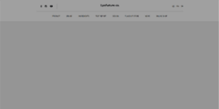

Portfolio
List
- ProjectList
- 1
- Shop
- #HTML #CSS #JS #React
PC & Mobile
- ReactProject1
- Axios, Router, React Hook, Lifecycle, Redux-Toolkit, localStorage, customHook 등을 적용한 프로젝트입니다.
- 바로가기
- 2
- Logitech
- #HTML #CSS #JS #React
PC & Mobile
- ReactProject2
- 컴포넌트와 props 값을 이용해 데이터바인딩을 진행했고 ScrollEvent, Aos 라이브러리를 사용했습니다.
- 바로가기
- 3
- Room Info
- #HTML #CSS #JS #Vue
PC & Mobile
- VueProject1
- Vue 프레임워크를 활용한 웹 앱을 제작했고, Lifecycle Hook을 활용한 예제입니다.
- 바로가기
- 4
- LG BESTSHOP
- #HTML #CSS #JS
PC & Mobile
- LG BestShop 웹페이지 제작
- Swiper 라이브러리 및 반응형 디자인에 중점을 둔 1차 프로젝트입니다.
- 바로가기
- 5
- BEANPOLE
- #HTML #CSS #JS
DeskTop
- BeanPole 웹페이지 제작
- GSAP 라이브러리와 mousewheelEvent 활용에 중점을 둔 프로젝트입니다.
- 바로가기
- OpenSource
Resource1
AWS 웹서버 구현 예제 1
NodeJS, Express 서버를 통해 MongoDB의
LIST 데이터를 화면에 구현한 예제
Web 바로가기
Source 바로가기
Resource6
Main화면 구성 예제
사이트의 메인화면을 아이콘과
가상요소를 이용해서 구성
Codepen 바로가기
Resource7
Slider라이브러리 예제
Swiper를 이용해 제작한 반응형
슬라이더
Codepen 바로가기
Resource8
Swiper라이브러리 예제 2
자동재생 및
일시정지 기능을
넣은 슬라이더
Codepen 바로가기

Resource10
GNB 구성 예제
click이벤트 및 CSS를 활용한
GNB 제작
Codepen 바로가기
Resource11
Form 태그 활용 예제
CSS Form태그를 활용한
로그인 화면 예제
Codepen 바로가기
- CaseStudy
- ○
- CaseStudy1
- React casestudy, Desktop
- React 18 useTransition, useDeferredValue의 비동기 상태 업데이트,
성능 개선 CaseStudy입니다.
- 바로가기
- ○
- CaseStudy2
- React casestudy, Desktop
- useState를 이용한 글목록 추가, 글 정렬 기능들을 구현한 케이스스터디입니다.
- 바로가기
- ○
- CaseStudy3
- Website design, Desktop
- Swiper를 이용한 슬라이더, GNB, Tab, 반응형 디자인에 중점을 두었습니다.
- 바로가기
- ○
- CaseStudy4
- Website design, Desktop
- Script를 사용한 슬라이더, 데이터 불러오기 등을 사용한 케이스스터디 입니다.
- 바로가기
- ○
- CaseStudy5
- Website design, Desktop
- 동일한 형식의 레이아웃 방식을 배치하고 CSS를 주로 이용한 케이스스터디 입니다.
- 바로가기
- ○
- CaseStudy6
- Website design, Desktop
- video 제어와 관련한 스크립트를 작성해본 케이스스터디 입니다.
- 바로가기
- design-Portfolio
- ○
- Design - Portfolio
- Photoshop, illustration, indesign
- 디자인학과 졸업 당시 포트폴리오 입니다.
- 바로가기